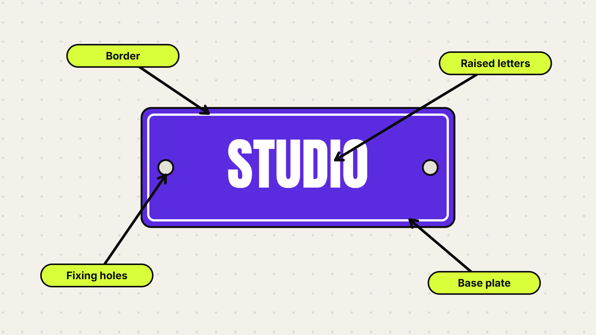
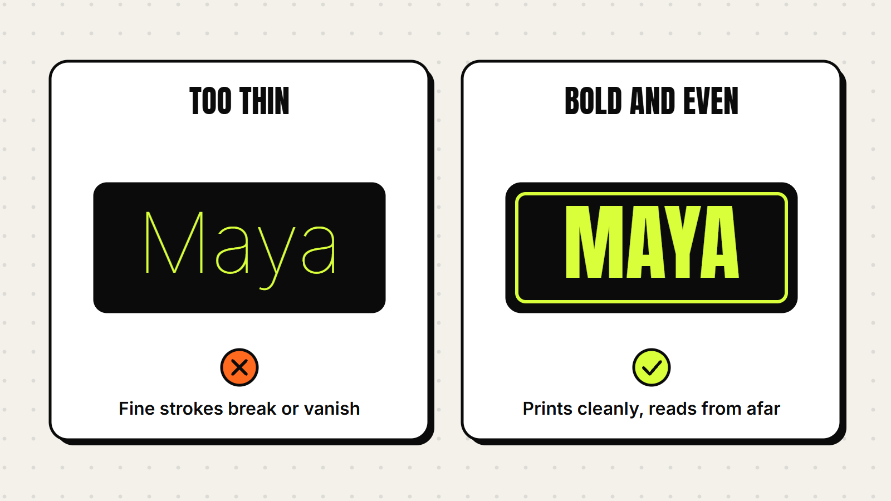

A name plate is a small object that gets looked at every day: on a front door, a desk, or a cabin wall. 3D printing makes it possible to shape one around your name, your colours, and the space it will live in. A few design choices decide whether it reads clearly and lasts. This guide walks through them.
Location sets almost everything else.

The base gives stiffness. The letters carry the message. A border frames it and protects the edges. Fixings hold it where it belongs.

| Style | Look | Notes |
|---|---|---|
| Raised letters | Shadows give depth | Colour change by height gives clear contrast |
| Recessed letters | Calm and protected | Can be filled with paint |
| Flush colour inlay | Smooth and modern | Needs multi-colour printing |
| Separate letters | Strong three-dimensional effect | Needs assembly and alignment |
Pick colours that differ strongly in lightness, such as white on black or black on yellow. Similar shades disappear in low light. For more on how colour affects cost, see single or multi-colour.
A desk plate read from one metre can use letters around 15 to 20 mm tall. A gate sign read from the pavement needs much larger ones. Print or draw the layout on paper at full size, place it where it will go, and step back. Adjust before anything is made.
PLA is a good fit for indoor desk and door plates. Use PETG in humid or warm indoor spots and ASA outdoors. Read the ASA guide before putting anything in full sun.
Personalised items are made for one person, so they are paid online rather than on delivery and cannot be resold. Approve the preview carefully, because a misspelt name cannot be corrected after printing.
Tip: Send the exact text typed, not spoken or photographed, and include capital letters exactly as you want them.
The same approach works for flat numbers, room labels, desk signs showing a role, pet tags for display, shelf labels in a shared workspace, and house signs combining a family name with a simple shape. Keep one visual style across a set, with the same font, colours, and border, so the pieces look planned. A single clear symbol, such as a leaf or a star drawn originally for you, adds character without crowding the text.
Avoid copying logos, characters, or artwork you do not own. If a brand mark belongs to your own business, say so and supply the original file.
Strong contrast wins: white or yellow letters on black, or black on a pale base. Hold two filament samples side by side in the light where the plate will sit, because shop lighting can mislead.
Yes, if it is yours. Send a clean, high-contrast image. Very fine pen strokes may need thickening so that they print, and you will see a preview before anything is made.
Strong double-sided mounting tape works on smooth, clean, sound surfaces for light plates. Check the weight rating, press firmly, and do not use it where a falling plate could hurt someone.
Not on a one-piece plate. If names change often, as in a shared office, ask for a holder with slide-in strips, so only the small insert needs replacing.
Measure the free space on the door and look at it from where visitors stand. Leave generous margins around the text, since crowded plates are harder to read than slightly larger ones.
Dust indoor plates with a soft cloth. Wipe outdoor ones with mild soapy water and check the fixings after heavy rain. Avoid solvent cleaners, which can dull colour or craze the surface. If letters or paint begin to fade in strong sun, note where the plate hangs and consider a tougher material next time.
Send the text, size, colours, and location through the quote form, or ask our design service to draw a layout for you. For more gift options, see personalised gift ideas.